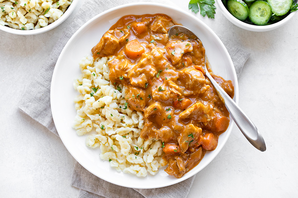

Chicken paprikas

Whenever (if ever) people think of Hungarian cuisine, their first thought is goulash soup. (gulyásleves) And while goulash is great, it is in my opinion also wildly overrated. And besides this it also takes a long time to prepare.
Whenever I want to flaunt Hungarian cuisine to foreigners, my go to dish is chicken paprikas. (paprikás csirke)
It is faster (although not fast) to prepare, cheaper, and in my opinion also tastier.
Ingredients for 4 people
Ingredients for the dumplings
This part can be skipped entirely and you can serve the dish with pasta instead, (such as penne or farfalle) however it is way better and more authentic with dumplings. (nokedli)
- 300 grams of all purpose flour
- 250 ml of water
- 1 egg
- 1/2 tablespoon of salt
Ingredients for the stew
- 2 tablespoons of sunflower oil
- 2 onions
- 2-3 cloves of garlic
- 200 gramms of mushrooms (this is optional, but adds a lot to the flavour)
- 2 upper and 2 lower chicken thighs
- 1 chicken breast
- 1 tomato
- 1 yellow Hungarian paprika (Optional but good to have, do not try to substitute with other peppers.)
- 2 tablespoons of paprika powder (not spicy)
- ground pepper
- salt
- 200 ml sour cream
- 1 tablespoon of all purpose flour
Preparing the dumplings - 30 minutes
- Put about 1,5 litres of water to boil with a tablespoon of salt and a tablespoon of oil.
- When the water is about to boil, pour the flour in a bowl and make a hole in the middle.
- In another bowl mix the egg with the water and 1/2 tablespoon of salt. Do not beat it up, just mix.
- When homogeneous, pour the water with egg in the flour and mix with a spoon.
No need to mix it too hard, just until it is somewhat homogeneous. The mixture should be sticky but not soggy.
- The traditional way to get the mixture into the boiling water is by a "nokedliszaggató". If you own this device, you know exactly how to use it.
Otherwise simply put your mixture on a cutting board, and with a wet knife simply cut small pieces off of the dough.
Once you have a few pieces ready, put them in the boiling hot water. When the dumplings surface, let them boil for 1-2 more minutes, then take them out with a colander.
- Once done, mix them a bit so they don't stick together too much. Put them aside for now.
Preparing the stew - 75 minutes
- Dice the onions and crush the garlic.
- Slice the mushrooms.
- Cut the tomato into 6-8 chunks, and the paprika in half. Remove the paprika seeds and stem.
- Cut the breast into cubes, and if the thighs are not already cut into upper and lower parts, separate them with a sharp knife.
- Heat up the oil, and once hot, put in the onions and garlic. Stir them frequently so they don't burn.
After a few minutes put in the mushrooms as well. Add some salt and pepper, keep stirring.
- Once the onions are translucent, add the chicken and fry until the breast starts to whiten.
- Pour a bit (around 100 ml) of water under the chicken, then add 2 tablespoons of ground paprika.
Mix the meat with the paprika until the chicken is not covered in it. Then let it simmer for about 3 minutes.
- Pour just enough water over the chicken to cover it, and add the chopped tomato and paprika.
- With a lid on, boil for 45-55 minutes on medium heat. Stir every now and then.
If you have a meat thermometer, you should boil the meat until the thighs are 170-175 degrees F. (or 77-80 degrees C)
- Taste if it needs more salt or pepper. I usually add these gradually over 2-3 times.
- This is optional, but at this point you can take the thighs out and debone them with a fork and a knife, then put the meat back in.
- Once the meat is cooked, put the sour cream in a small bowl and pour some of the broth over it. Enough so you can mix it well.
Mix them together in the bowl, then through a sieve slowly add 1 tablespoon of flour and keep stirring. This is to make the broth thicker.
Once you have mixed the sour cream, the broth and the flour and there are no clumps in it, pour the mix in the pot and slowly stir it in.
- Now lower the heat a bit and let it simmer for 5 more minutes.
- Put the dumplings (or pasta) on a plate and pour the stew on top. If you have leftover sour cream, you can put it on top.
Jó étvágyat!
Home